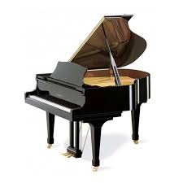

Anti UX
Piano:

THE PIANO IS AN INSTRUMENT WITH KEYS THAT, WHEN PRESSED, TRIGGER A HAMMER TO HIT A STRING ON THE INSIDE OF THE BODY OF THE PIANO. THE STRINGS THE VIBRATE THE WOODEN BODY OF THE PIANO AND PRODUCE SOUND WAVES THAT WE CAN HEAR. THE PIANO HAS A MASSIVE RANGE, FROM BASS TO MID TO TREBLE. iT WAS INVENTED IN THE 18 CENTURY. SOME MODERN COMPETING PIANO COMPANIES ARE YAMAHA, STEINWAY, AND BALDWIN.